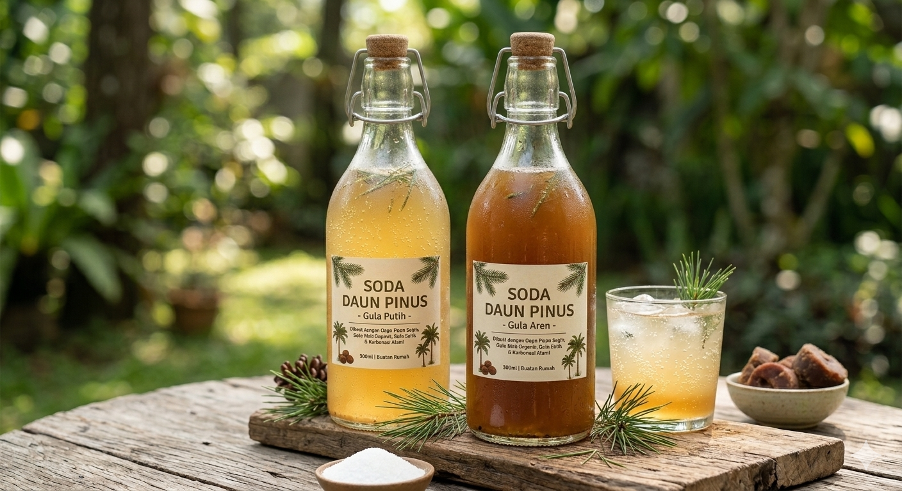
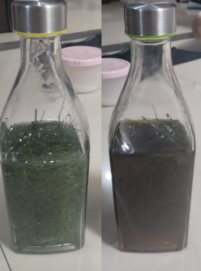

Bioteknologi adalah cabang ilmu biologi yang mempelajari pemanfaatan makhluk hidup (bakteri, fungi, virus, dan lain-lain) maupun produk dari makhluk hidup (enzim, alkohol) dalam proses produksi untuk menghasilkan barang dan jasa. Secara sederhana, bioteknologi menggunakan teknologi yang sudah disediakan oleh alam (organisme) untuk membantu kebutuhan manusia.
Bioteknologi dibagi menjadi dua jenis utama: 1. Bioteknologi Konvensional (Tradisional) Bioteknologi ini sudah ada sejak ribuan tahun lalu. Ciri khasnya adalah menggunakan mikroorganisme secara utuh dan prosesnya masih sangat sederhana seperti fermentasi. Cara kerja: Memanfaatkan metabolisme alami mikroorganisme. Contoh: Pembuatan Soda Daun Pinus (fermentasi ragi alami), tempe (jamur Rhizopus), tape, yogurt, dan keju.
2. Bioteknologi Modern Bioteknologi ini melibatkan rekayasa genetika atau manipulasi DNA untuk menghasilkan organisme dengan sifat baru yang lebih unggul.
Learn More
Pine needle soda atau soda daun pinus adalah minuman berkarbonasi alami yang dibuat melalui proses fermentasi spontan antara daun pinus segar, air, dan gula. Minuman ini memanfaatkan ragi alami (wild yeast) yang menempel pada permukaan daun pinus untuk mengubah gula menjadi gas karbon dioksida (CO₂) dan sedikit alkohol (biasanya sangat rendah, di bawah 0.5%), sehingga menciptakan sensasi soda yang segar tanpa perlu alat pembuat soda.
1. Siapkan alat dan bahan yang dibutuhkan.
2. Cuci bersih daun pinus bagian jarum menggunakan air mengalir.
3. Potong daun pinus menggunakan gunting hingga sepanjang 5 cm.
4. Masukkan daun pinus seberat 50 gram ke dalam botol kedap udara.
5. Masukkan gula seberat 60 gram ke dalam botol.
6. Masukkan air sebanyak 800 ml.
7. Aduk hingga gula larut.
8. Tutup botol rapat dan simpan di tempat gelap.
9. Tunggu selama 4 hari dan soda daun pinus siap diminum.
